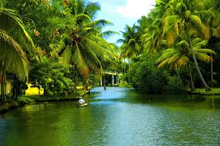
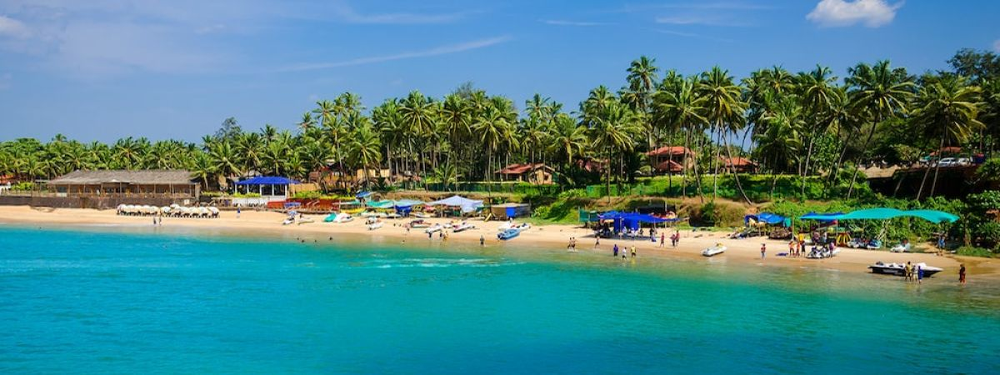
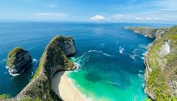
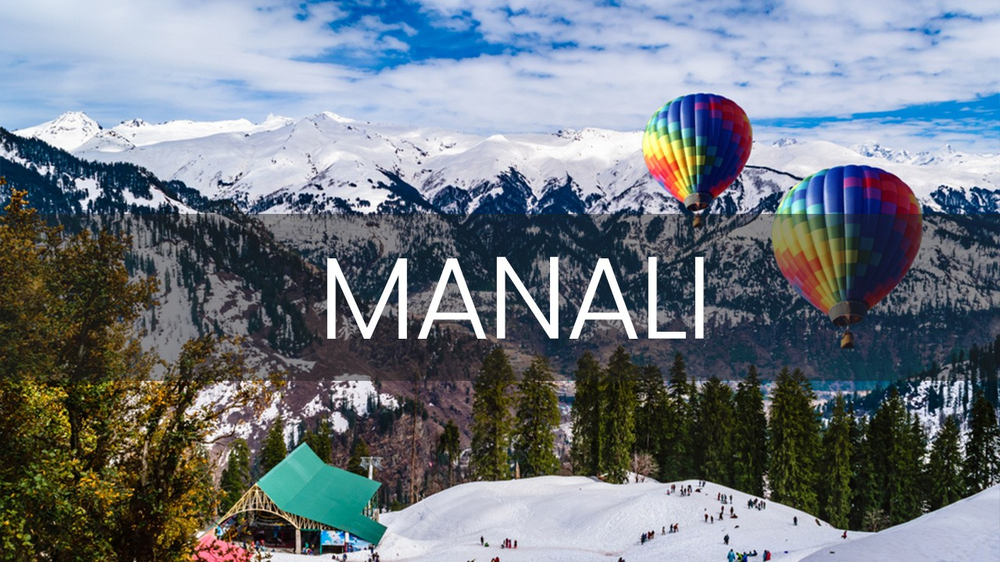

Kerala
Kerala is known as "God's Own Country," is a captivating destination in southern India,
celebrated for its lush landscapes and rich cultural heritage. From the tranquil backwaters of
Alleppey and Kumarakom to the scenic hill station of Munnar, Kerala offers a diverse range of
experiences. Explore Kochi's colonial charm, unwind on Varkala's cliffs overlooking the Arabian
Sea, and immerse yourself in traditional dance forms like Kathakali. Savor authentic Kerala
cuisine, including the famed Sadya meal, and rejuvenate with Ayurvedic treatments. Whether
cruising on a houseboat, trekking through spice plantations, or relaxing on pristine beaches,
Kerala promises a unique and memorable travel experience.
From ₹4,000

Goa
Goa is a vibrant state on India’s west coast known for its beautiful beaches and lively
atmosphere. Popular spots include Baga and Anjuna Beaches, where you can enjoy the sun, sand,
and beach parties. Old Goa offers historic churches and colorful Portuguese architecture.
Panaji, the state capital, has charming streets and lively markets. For nature lovers, Dudhsagar
Falls provides a stunning waterfall experience, while the spice plantations offer a glimpse into
Goa’s rich agriculture. Whether you're looking for relaxation or adventure, Goa has something
fun and exciting for everyone.
From ₹7,000

Kashmir
Kashmir, often called "Paradise on Earth," is known for its breathtaking beauty and serene
landscapes. Srinagar is famous for its houseboats and floating gardens on Dal Lake. Gulmarg
offers stunning views and is perfect for skiing and gondola rides. Pahalgam is a peaceful spot
with lush meadows and the starting point for the Amarnath Yatra pilgrimage. The beautiful
gardens and historic sites in Shalimar and Nishat add to Kashmir's charm. Whether you want to
explore nature, enjoy adventure sports, or simply relax, Kashmir is a magical destination with
something for everyone.
From ₹10,000

Bali
Bali, an island in Indonesia, is a popular tourist destination known for its stunning beaches,
lush rice terraces, and vibrant culture. Visitors flock to Bali for its beautiful resorts,
surfing spots, and warm climate. Ubud, with its art and traditional crafts, offers a peaceful
retreat, while places like Kuta and Seminyak are famous for lively nightlife and shopping.
Temples like Tanah Lot and Uluwatu showcase Bali's rich heritage and stunning coastal views.
Whether you're interested in relaxing on the beach, exploring nature, or experiencing local
traditions, Bali has something for everyone.
From ₹12,000

South Goa
South Goa is a charming destination in India known for its tranquil beaches, lush landscapes, and
relaxed atmosphere. Unlike the bustling north, South Goa offers quieter, picturesque beaches
like Palolem, Agonda, and Colva, perfect for relaxation and scenic views. The area also features
beautiful colonial architecture, serene lakes, and historic forts like Cabo de Rama. Visitors
can explore vibrant local markets, enjoy fresh seafood, and experience the laid-back Goan
lifestyle. South Goa is ideal for those seeking a peaceful getaway with natural beauty and
cultural richness.
From ₹8,000

Manali
Manali is a beautiful hill station in Himachal Pradesh, India, famous for its stunning views, cool climate, and outdoor activities. Visitors enjoy the scenic beauty of places like Solang Valley, where they can try paragliding and skiing, and Rohtang Pass, known for its snow-covered landscapes. The town also has charming spots like the Hadimba Temple and lively markets on Mall Road. With its lush green surroundings and opportunities for adventure, Manali is a great destination for both relaxation and excitement.
From ₹6,500